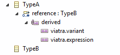

The existing annotation http://www.polarsys.org/capella/derived as been enhanced by adding Viatra implementation information. It describes how the derived reference can be computed using Viatra queries.
It is based on two added details on the annotation:
According to the value of viatra.variant, a Viatra pattern can be created for the given derived reference:

For a TypeA, referencing TypeB by the derived reference containing such annotation. TypeA.reference:TypeB, reference is computed by:
| viatra.variant | viatra.expression | implied pattern |
|---|---|---|
| alias | referenceName | pattern (self: TypeA, target: TypeB) {
TypeA.referenceName(self, target)
}
|
| opposite | referenceName | pattern (self: TypeA, target: TypeB) {
TypeB.referenceName(target, self)
}
|
| patternbody | expression | pattern (self: TypeA, target: TypeB) {
expression
}
|
| freeform | expression | expression |
| unimplemented | N/A | N/A (this reference is not implemented/implementable by a Viatra pattern) |